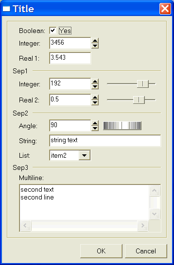

Shows a modal dialog for capturing parameter values using several types of controls.
This dialog is included in the Controls Library. It requires an addicional initialization, see the Controls Library documentation.
int IupGetParam(const char* title, Iparamcb action, void* user_data, const char* format,...); [in C] iup.GetParam(title: string, action: function, format: string,...) -> (ret: number, ...) [in Lua]
title: dialog title.
action: user callback to be called whenever a parameter value was changed,
and when the user pressed the OK button. It can be NULL.
user_data: user pointer repassed to the user callback.
format: string describing the parameter
...: list of variables address with initial values for the parameters.
The function returns 1 if the OK button is pressed, 0 if the user canceled or if an error occurred. The function will abort if there are errors in the format string as in the number of the expected parameters.
typedef int (*Iparamcb)(Ihandle* dialog, int param_index, void* user_data);
action(dialog: ihandle, param_index: number) -> (ret: number) [in Lua]
dialog: dialog handle
param_index: current parameter being changed. It is -1 if the user pressed the OK button. It is -2 when the dialog is mapped, just before shown. It is -3 if the user pressed the Cancel button.
user_data: a user pointer that is passed in the function call.You can reject the change or the OK action by returning "0" in the callback, otherwise you must return "1".
You should not programmatically change the current parameter value during the callback. On the other hand you can freely change the value of other parameters.
Use the dialog attribute "
PARAMn" to get the parameter "Ihandle*", but not that this is not the actual control. Where "n" is the parameter index in the order they are specified starting at 0, but separators are not counted. Use the parameter attribute "CONTROL" to get the actual control. For example:Ihandle* param2 = (Ihandle*)IupGetAttribute(dialog, "PARAM2"); int value2 = IupGetInt(param2, IUP_VALUE); Ihandle* param5 = (Ihandle*)IupGetAttribute(dialog, "PARAM5"); Ihandle* ctrl5 = (Ihandle*)IupGetAttribute(param5, "CONTROL"); if (value2 == 0) { IupSetAttribute(param5, IUP_VALUE, "New Value"); IupSetAttribute(ctrl5, IUP_VALUE, "New Value"); }Since parameters are user controls and not real controls, you must update the control value and the parameter value.
Be aware that programmatically changes are not filtered. The valuator, when available, can be retrieved using the parameter attribute "
AUXCONTROL". The valuator is not automatically updated when the text box is changed programmatically. The parameter label is also available using the parameter attribute "LABEL".
For the dialog:
"
PARAMn" - returns an IUPIhandle*representing the nth parameter, indexed by the declaration order not couting separators.
"OK" - returns an IUPIhandle*,the main button.
"CANCEL" - returns an IUPIhandle*,the close button.For a parameter:
"
LABEL" - returns an IUPIhandle*, the label associated with the parameter.
"CONTROL" - returns an IUPIhandle*, the real control associated with the parameter.
"AUXCONTROL" - returns an IUPIhandle*, the auxiliary control associated with the parameter (only for Valuators).
"INDEX" - returns an integer value associated with the parameter index.IupGetIntcan also be used.
"VALUE" - returns the parameter value as a string, butIupGetFloatandIupGetIntcan also be used.In Lua to retreive a parameter you must use the following function:
IupGetParamParam(dialog: ihandle, param_index: number)-> (param: ihandle) [in IupLua3] iup.GetParamParam(dialog: ihandle, param_index: number)-> (param: ihandle) [in Lua]dialog: Identifier of the dialog.
para_index: parameter to be retrieved.
The format string must have the following format, notice the "\n" at the end
"text%x[extra]\n", where:
text is a descriptive text, to be placed to the left of the entry field in a label.
x is the type of the parameter. The valid options are:
b = boolean (shows a True/False toggle, use "int" in C)
i = integer (shows a integer filtered text box, use "int" in C)
r = real (shows a real filtered text box, use "float" in C)
a = angle in degrees (shows a real filtered text box and a dial, use "float" in C)
s = string (shows a text box, use "char*" in C, it must have room enough for your string)
m = multiline string (shows a multiline text box, use "char*" in C, it must have room enough for your string)
l = list (shows a dropdown list box, use "int" in C for the zero based item index selected)
t = separator (shows a horizontal line separator label, in this case text can be an empty string)extra is one or more additional options for the given type
[min,max] are optional limits for integer and real types. The maximum value can be omited. When both are specified a valuator will also be added to change the value.
[false,true] are optional strings for boolean types. The strings can not have commas ',', nor brackets '[' or ']'.
mask is an optional mask for the string and multiline types. The dialog uses the IupMask internally. In this case we do no use the brackets '[' and ']' to avoid confusion with the specified mask.
|item0|item1|item2,...| are the items of the list. At least one item must exist. Again the brackets are not used to increase the possibilities for the strings, instead you must use '|'. Items index are zero based start.The number of lines in the format string ("\n"s) will determine the number of required parameters. But separators will not count as parameters.
The dialog is resizable if it contains a string, a multiline string or a number with a valuator. All the multiline strings will increase size equally in both directions.
The dialog uses a global attribute called IUP_PARENTDIALOG as the parent dialog if it is defined. It also uses a global attribute called "ICON" as the dialog icon if it is defined.
Here is an example showing many the possible parameters. We show only one for each type, but you can have as many parameters of the same type you want.

IupScanf, IupGetColor, IupMask, IupValuator, IupDial, IupList.